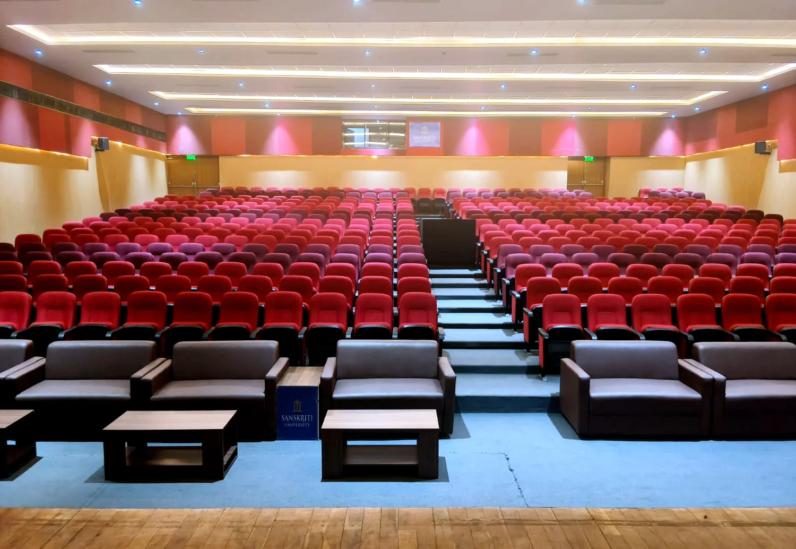

Executive Boardroom Hybrid Modernization & Touch Automation
Turnkey upgrade of high-profile executive boardrooms into intuitive Microsoft Teams Rooms with zero-latency 4K presentation and automated acoustic tuning.
24-Seat
Boardroom Setup
1-Touch
Meeting Start
99.9%
Uptime Record
01. The Challenge
Poor microphone voice pickup across long conference tables, messy table cabling, and meeting start delays averaging 12+ minutes.
02. GPSPL Hardware Scope
Shure MXA920 ceiling beamforming mic array, Q-SYS Core DSP, Sony 85" 4K Commercial Displays, Crestron CP4N automation, and Poly Teams codec.
03. Engineering Execution
Flush ceiling acoustic integration, under-table structured cable dressing, preset lighting controls, and wireless BYOD content sharing.
04. Measured Outcome
Meeting launch time reduced to under 10 seconds. Crystal-clear voice pickup from every seat with zero audio feedback.